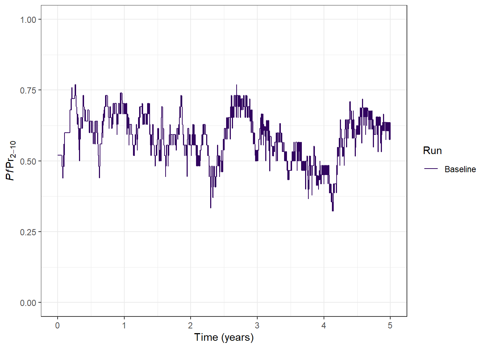
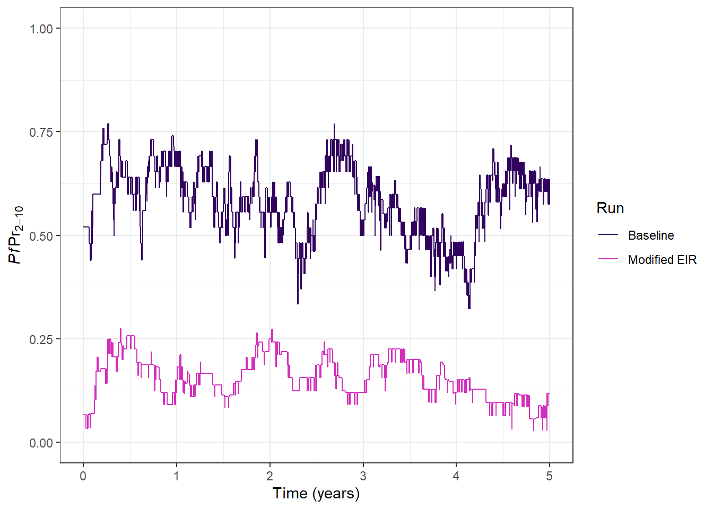
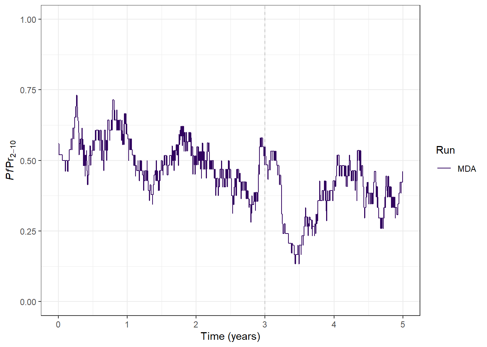
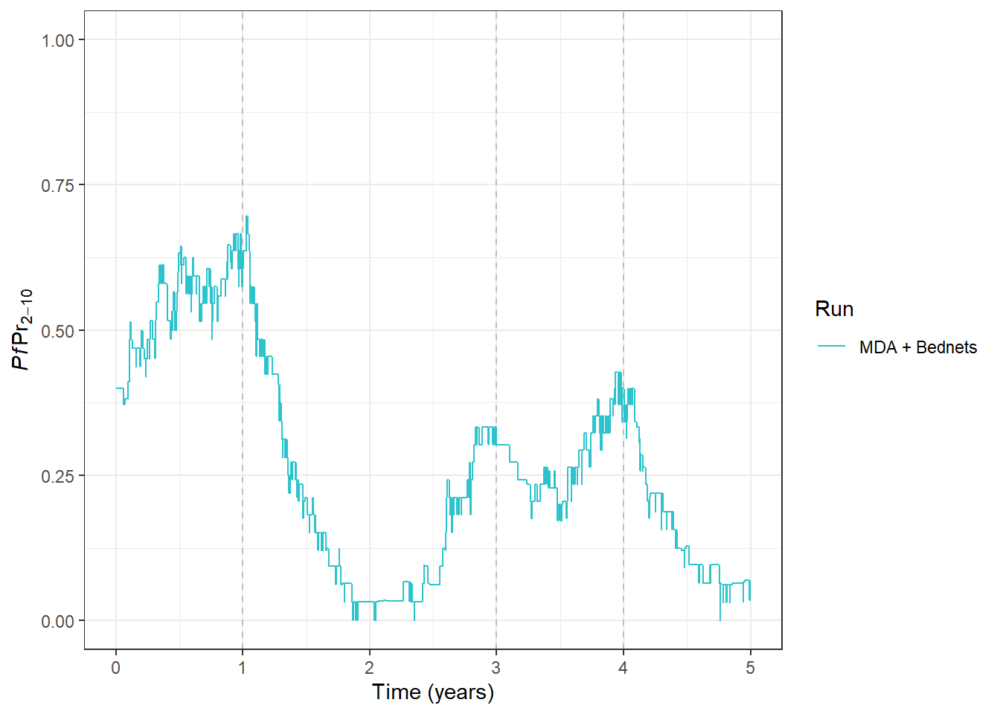

# Set the package repositories to use when installing packages
## mrcide: for packages from the MRC IDE repository
## CRAN: for general R packages from the official repository
options(
repos = c(
mrcide = 'https://mrc-ide.r-universe.dev',
CRAN = 'https://cloud.r-project.org'
)
)
# Install packages
## The malaria model:
install.packages("malariasimulation")
## For malaria model output processing:
install.packages("postie")
## For output wrangling:
install.packages("dplyr")
## For plotting:
install.packages("ggplot2")Malariaverse Tutorial: Part 1
This step-by-step guide will walk you through using malariasimulation in R to model malaria transmission and interventions and how to use the malariaverse to apply malariasimulation to a specific context. Let’s dive right in!
Set up and installation
Firstly you’ll need to get up and running with R and install the packages we will use.
# Load packages
library("malariasimulation")
library("postie")
library("dplyr")Warning: package 'dplyr' was built under R version 4.3.3
Attaching package: 'dplyr'The following objects are masked from 'package:stats':
filter, lagThe following objects are masked from 'package:base':
intersect, setdiff, setequal, unionlibrary("ggplot2")Warning: package 'ggplot2' was built under R version 4.3.3# Set a seed for reproducible stochastic outputs
set.seed(12345)Starting Simple: Running the Malaria Model
To begin, we’ll run a basic malariasimulation model simulation. This initial run will be generic — meaning it’s not yet customised to represent a specific region, population or transmission setting. We’ll also skip any interventions for now, so we’re simply simulating transmission.
# Get the default parameters
parameters <- get_parameters()
# Run a simple malariasimulation for 5 years
output <- run_simulation(
timesteps = 365 * 5,
parameters = parameters
)We can take a look at the raw simulation output
glimpse(output)Rows: 1,825
Columns: 30
$ timestep <dbl> 1, 2, 3, 4, 5, 6, 7, 8, 9, 10, 11, 12, 13, 14, 1…
$ n_infections <dbl> 0, 0, 0, 0, 0, 0, 0, 0, 0, 0, 0, 0, 0, 0, 0, 0, …
$ infectivity <dbl> 0.031406, 0.031406, 0.031406, 0.030788, 0.030788…
$ EIR_gamb <dbl> 0.000000, 0.000000, 0.000000, 0.000000, 0.000000…
$ FOIM_gamb <dbl> 0.01308150, 0.01308150, 0.01308150, 0.01308150, …
$ mu_gamb <dbl> 0.132, 0.132, 0.132, 0.132, 0.132, 0.132, 0.132,…
$ n_bitten <dbl> 0, 0, 0, 0, 0, 0, 0, 0, 0, 0, 0, 0, 0, 0, 0, 0, …
$ S_count <dbl> 42, 42, 42, 42, 42, 42, 42, 42, 42, 42, 43, 43, …
$ A_count <dbl> 44, 44, 44, 43, 43, 43, 43, 44, 44, 44, 44, 44, …
$ D_count <dbl> 1, 1, 1, 1, 1, 1, 1, 0, 0, 0, 0, 0, 0, 0, 0, 0, …
$ U_count <dbl> 13, 13, 13, 14, 14, 14, 14, 14, 14, 14, 13, 13, …
$ Tr_count <dbl> 0, 0, 0, 0, 0, 0, 0, 0, 0, 0, 0, 0, 0, 0, 0, 0, …
$ ica_mean <dbl> 0.00, 0.00, 0.00, 0.00, 0.00, 0.00, 0.00, 0.00, …
$ icm_mean <dbl> 0, 0, 0, 0, 0, 0, 0, 0, 0, 0, 0, 0, 0, 0, 0, 0, …
$ id_mean <dbl> 0.00, 0.00, 0.00, 0.00, 0.00, 0.00, 0.00, 0.00, …
$ ib_mean <dbl> 0.00000000, 0.00000000, 0.00000000, 0.00000000, …
$ iva_mean <dbl> 0.00, 0.00, 0.00, 0.00, 0.00, 0.00, 0.00, 0.00, …
$ ivm_mean <dbl> 0, 0, 0, 0, 0, 0, 0, 0, 0, 0, 0, 0, 0, 0, 0, 0, …
$ n_detect_lm_730_3650 <dbl> 13, 13, 13, 13, 13, 13, 13, 13, 13, 13, 13, 13, …
$ p_detect_lm_730_3650 <dbl> 13, 13, 13, 13, 13, 13, 13, 13, 13, 13, 13, 13, …
$ n_detect_pcr_730_3650 <dbl> 15, 15, 15, 15, 15, 15, 15, 15, 15, 15, 15, 15, …
$ n_age_730_3650 <dbl> 25, 25, 25, 25, 25, 25, 25, 25, 25, 25, 25, 25, …
$ E_gamb_count <dbl> 39147.67, 39142.56, 39133.52, 39129.46, 39127.77…
$ L_gamb_count <dbl> 1139.318, 1139.333, 1139.286, 1139.390, 1139.279…
$ P_gamb_count <dbl> 169.7520, 169.7485, 169.7476, 169.7363, 169.7432…
$ Sm_gamb_count <dbl> 987.8232, 977.2909, 968.1788, 960.2969, 953.4757…
$ Pm_gamb_count <dbl> 12.17683, 22.70920, 31.81918, 39.69884, 46.51432…
$ Im_gamb_count <dbl> 0.000000, 0.000000, 0.000000, 0.000000, 0.000000…
$ total_M_gamb <dbl> 1000.0000, 1000.0001, 999.9980, 999.9958, 999.99…
$ natural_deaths <dbl> 0, 0, 0, 0, 0, 0, 0, 0, 0, 0, 0, 0, 0, 0, 0, 0, …There are a lot of outputs for each time step (day)!
Analysing Outputs with postie
To get a sense of what’s going on in our simulation, we can use the postie package to process the results, ready for visualisation. This package will help you extract and format key metrics like prevalence, severe cases, and more.
# Extract formatted prevalence from the raw output and add a run name
processed_output <- get_prevalence(
x = output,
baseline_year = 0
) |>
mutate(run = "Baseline")
glimpse(processed_output)Rows: 1,825
Columns: 7
$ year <dbl> 0, 0, 0, 0, 0, 0, 0, 0, 0, 0, 0, 0, 0, 0, 0, 0, 0, …
$ month <int> 1, 1, 1, 1, 1, 1, 1, 1, 1, 1, 1, 1, 1, 1, 1, 1, 1, …
$ week <dbl> 1, 1, 1, 1, 1, 1, 1, 2, 2, 2, 2, 2, 2, 2, 3, 3, 3, …
$ day <dbl> 1, 2, 3, 4, 5, 6, 7, 8, 9, 10, 11, 12, 13, 14, 15, …
$ time <dbl> 0.000000000, 0.002739726, 0.005479452, 0.008219178,…
$ lm_prevalence_2_10 <dbl> 0.52, 0.52, 0.52, 0.52, 0.52, 0.52, 0.52, 0.52, 0.5…
$ run <chr> "Baseline", "Baseline", "Baseline", "Baseline", "Ba…Often, the best way to examine outputs is to plot them. Malaria prevalence indicates the “Proportion of a specified population with malaria infection at one time”. We can plot Plasmodium falciparum parasite prevalence in 2-10 year (PfPR2-10) olds over time.
ggplot(
data = processed_output,
aes(x = time, y = lm_prevalence_2_10, colour = run)
) +
geom_line() +
scale_colour_manual(
values = "#31035f", name = "Run"
) +
xlab("Time (years)") +
ylab(expression(italic(Pf) * Pr[2-10])) +
ylim(0, 1) +
theme_bw()
Adjusting the intensity Transmission
In our model run above, we can see PfPR2-10 hovering around 0.5. If we want, we can adjust the level of baseline transmission - that is, transmission intensity in the absence of interventions.
malariasimulation has lots of helper function to make it easier to modify the parameter list. One of these, set_equilibrium(), allows us to adjust the baseline Entomological Inoculation Rate (EIR). The EIR is the “number of infective bites received per person in a given unit of time”, in this case per year. Let’s see what impact chnaging the EIR in our model has
# Update the parameters with a new EIR
parameters <- parameters |>
set_equilibrium(init_EIR = 2)
# Run a new simulation
output2 <- run_simulation(
timesteps = 365 * 5,
parameters = parameters
)
# Extract formatted prevalence from the raw output and add a run name
processed_output2 <- get_prevalence(
x = output2,
baseline_year = 0
) |>
mutate(run = "Modified EIR")
# Combined outputs from both simulations for plotting
plot_data <- bind_rows(
processed_output,
processed_output2
)
ggplot(
data = plot_data,
aes(x = time, y = lm_prevalence_2_10, col = run)
) +
geom_line() +
scale_colour_manual(
values = c("#31035f", "#d32fbd"), name = "Run"
) +
xlab("Time (years)") +
ylab(expression(italic(Pf) * Pr[2-10])) +
ylim(0, 1) +
theme_bw()
Our Baseline run used the default EIR of 10. For our modified run, we can see the impact of lowering the EIR to 2 - PfPR2-10 has fallen from around 50% to 20%.
Taking the Next Step: Introducing Interventions
After learning how to perform foundational model runs, the next step is adding interventions. Fortunately, malariasimulation has lots of helper functions to facilitate adding different interventions into our simulation. These functions help you to modify the parameter list to include your interventin of choice.
Let’s revisit our initial model run, and add in a single mass drug administration (MDA). An MDA is the “administration of antimalarial treatment to all age groups of a defined population or every person living in a defined geographical area (except those for whom the medicine is contraindicated) at approximately the same time and often at repeated intervals”. They aren’t used that frequently in practice, but they’re a good intervention to play with in the model as they have a big instant impact and are simple to specify. The helper functions we will use in the code below to implement and MDA is set_mda() and to specify drugs in the simulation [set_drugs()][https://mrc-ide.github.io/malariasimulation/reference/set_drugs.html].
# Get the default parameters
parameters <- get_parameters()
# Specify the drug options we can use in the simulation.
## Here we are adding in default parameters for a commonly used drug: Artemether and Lumefantrine (AL).
parameters <- set_drugs(
parameters = parameters,
drugs = list(AL_params)
)
# Specify one round of MDA
## Drug 1 - indicates we use the first (and only) drug defined in the list above
## We implement the MDA in the 3rd year (on day 365 * 3)
## 90% of the target population will receive AL
## The target population in those aged 6 months - 100 years
parameters <- set_mda(
parameters = parameters,
drug = 1,
timesteps = 365 * 3,
coverages = 0.99,
min_ages = 0,
max_ages = 36500
)
# Run the model
output <- run_simulation(
timesteps = 365 * 5,
parameters = parameters
)
# Extract formatted prevalence from the raw output and add a run name
processed_output <- get_prevalence(
x = output,
baseline_year = 0
) |>
mutate(run = "MDA")
# Plot some results
ggplot(
data = processed_output,
aes(x = time, y = lm_prevalence_2_10, colour = run)
) +
geom_vline(xintercept = 3, linetype = 2, colour = "grey") +
geom_line() +
scale_colour_manual(
values = "#31035f", name = "Run"
) +
xlab("Time (years)") +
ylab(expression(italic(Pf) * Pr[2-10])) +
ylim(0, 1) +
theme_bw()
Congratulations 🎉, you have successfully implemented a round of MDA, and we can see the impact on PfPR2-10. There is a large drop in PfPR2-10 as infections are cleared following administration of AL to a large proportion of the population. However, we can also see with only 1 round of MDA that malaria prevalence returns back to previous levels very quickly.
Sustained control: Multiple Interventions
As we’ve seen, the impact of our MDA doesn’t last long. We might want to add additional interventions that help to control malaria transmission over a longer period. One of the most widely used and successful interventions against malaria to date are insecticide treated bed nets (ITNs).
We can add ITNs to MDA in our simulation by using the helper function set_bednets(), to further modify our input parameter list. ITNs are often given out in mass distributions that occur every 3 years. We can replicate this style of distribution - let’s specify a mass distribution at the start of years 2 and 5.The set_bednets() function has a number of arguments you must supply, but remember, you can always call ?set_bednets() for help and information on how to use the function correctly. Adding the ? before the function will show you help for any of the malariasimulation functions.
parameters <- set_bednets(
parameters,
timesteps = c(1, 4) * 365 + 1,
coverages = c(0.8, 0.8), # Each round is distributed to 50% of the population.
retention = 3 * 365, # Nets are kept on average 5 years
dn0 = matrix(c(0.533, 0.533), nrow = 2, ncol = 1), # Matrix of death probabilities for each mosquito species over time
rn = matrix(c(0.56, 0.56), nrow = 2, ncol = 1), # Matrix of repelling probabilities for each mosquito species over time
rnm = matrix(c(0.24, 0.24), nrow = 2, ncol = 1), # Matrix of minimum repelling probabilities for each mosquito species over time
gamman = rep(2.64 * 365, 2) # Vector of bed net half-lives for each distribution timestep
)
# Run the model
output <- run_simulation(
timesteps = 365 * 5,
parameters = parameters
)
# Extract formatted prevalence from the raw output and add a run name
processed_output <- get_prevalence(
x = output,
baseline_year = 0
) |>
mutate(run = "MDA + Bednets")
# Plot some results
ggplot(
data = processed_output,
aes(x = time, y = lm_prevalence_2_10, colour = run)
) +
geom_vline(xintercept = 3, linetype = 2, colour = "grey") +
geom_vline(xintercept = c(1, 4), linetype = 2, colour = "grey") +
geom_line() +
scale_colour_manual(
values = "#2cc3cc", name = "Run"
) +
xlab("Time (years)") +
ylab(expression(italic(Pf) * Pr[2-10])) +
ylim(0, 1) +
theme_bw()
Excellent, we can see that in this simulation bed nets are doing a really good job of reducing transmission and helping to keep it low. Now that you’ve learnt how to run a simulation and add in multiple interventions you could begin to use the model to help understand and answer many interesting questions:
- Intervention impact: How do different interventions, like bed nets or mass drug administration, affect transmission over time? Optimal mixes of interventions: What combination of interventions yields the greatest reduction in malaria burden?
- Timing of interventions: When is the best time to deploy interventions for maximum effectiveness?
- Cost-effectiveness: Which interventions provide the greatest impact for the lowest cost in various settings?
- Effect of coverage: How does changing the percentage of the population covered by an intervention alter transmission dynamics?
- Long-term sustainability: What happens when interventions are scaled back or discontinued? Does malaria transmission bounce back?
Part 2 - Context Matters!
In the next part of this tutorial, (part 2)[URL], we’ll be considering other important factors in additional to interventions that can impact malaria transmission. We’ll be learning how to capture differences in seasonality, mosquitoes, human demography and more!